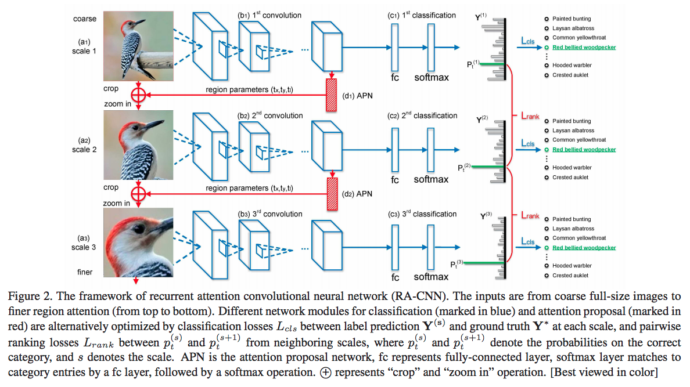
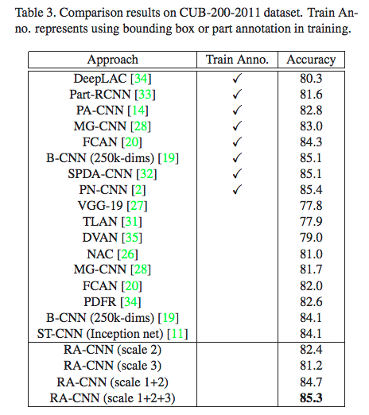

论文：Look Closer to See Better: Recurrent Attention Convolutional Neural Network
for Fine-grained Image Recognition
微软亚研院的细粒度分类文章，作者认为 region detection 和 fine-grained feature learning 可以相互强化，所以提出RA-CNN用相互强化的方法学习 discriminative region attention 和 region-based feature representation。
RA-CNN 是一个叠加网络，输入是全图像和多尺度的细粒度局部区域，包括三个scale的子网络，每个子网络的网络结构一样，各包含一个分类网络和一个APN (Attention Proposal Network) 网络。
对于输入图片，先用第一个 scale 子网络的分类网络来取特征，然后APN 基于分类网络提取的特征，训练得到 attention区域后，裁剪放大，作为第二个 scale 子网络的输入。同样的过程经过三次就可以得到 3 个scale 子网络的输出结果，由粗到细地生成 region attention，最后将不同 scale 网络的结果进行融合。

APN 网络
APN 网络有两个FC，输出channel 为3，假设检测出来的 attention 区域是正方形，则三个channel 分别对应attention 区域中心点坐标 $t_x$ ， $t_y$ 和正方形边长的一半 $t_l$ 。
Loss
loss 包括scale内的正确分类损失 intra-scale classification loss 和scale 间相邻尺度之间的成对排序损失 inter-scale ranking loss 两项，其中inter-scale ranking loss 是希望后面scale网络的预测比相邻的前一个更准：
分类
分类时将不同 scale 子网络得到的fc堆叠起来，连一个fc，通过softmax作为最后的分类结果。
